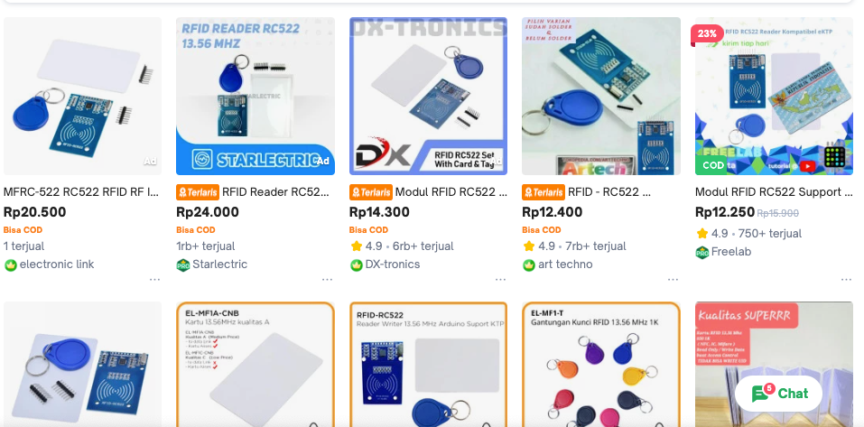

Pertemuan ke 8: Pengenalan Teknologi Smart Card
Topik Bahasan
Proyek Dasar Mikrokontroller (Jenis Electronics Development Board dan Bahasa Pemrograman Microcontroller, Pengenalan & Jenis Komunikasi Data, Pengenalan Teknologi Smart card, Praktik Dasar Elektronika)
Deskripsi
- Memahami berbagai jenis Electronics Development Board seperti: Arduino Uno/Nano, ATMega Series, STM32, ESP8266, ESP32, Raspi Pi Pico, Raspberry Pi, dan Jetson Nano
- Memahami jenis komunikasi data, baik data wired maupun wireless seperti: Komunikasi Serial, I2C, SPI, WiFi, Bluetooth / BLE, LoRa, ZigBee, Seluler (2G - 5G), NFC, dan NB-IoT.
- Memahami konsep dan teknologi smart card seperti Mifare, Desfire, Javacard dan protokol komunikasi smart car(APDU).
- Mampu menggunakan solder/desolder dengan benar, mampu mensimulasikan dan merancang rangkaian listrik (fritzing/wokwi), Mampu menerapkan dasar pemrograman Arduino.
Teori Singkat
Reader RC522 adalah modul RFID (Radio Frequency Identification) yang menggunakan teknologi komunikasi NFC (Near Field Communication). Modul ini umum digunakan untuk membaca dan menulis data pada kartu atau tag RFID yang beroperasi pada frekuensi 13.56 MHz. Berikut adalah deskripsi singkat dan cara kerjanya:

Deskripsi RC522
Komponen:
- Antena: Untuk mengirim dan menerima sinyal radio ke/dari tag RFID.
- Mikrokontroler: Untuk mengelola komunikasi dan pengolahan data.
- Komunikasi SPI: Untuk berinteraksi dengan mikrokontroler atau komputer.
- Memori EEPROM: Untuk menyimpan pengaturan dan data.
Fitur:
- Frekuensi Operasi: 13.56 MHz.
- Protokol Komunikasi: SPI (Serial Peripheral Interface), I2C, atau UART.
- Jarak Pembacaan: Sekitar 2-5 cm tergantung pada antena dan tag.
- Daya Rendah: Efisien dalam penggunaan daya, cocok untuk aplikasi embedded.
Aplikasi:
- Kontrol Akses: Penggunaan di sistem keamanan untuk membuka pintu atau akses ke area tertentu.
- Pembayaran Elektronik: Digunakan dalam kartu pembayaran nirsentuh.
- Identifikasi: Digunakan dalam sistem identifikasi otomatis untuk pelacakan aset atau kehadiran.
Cara Kerja RC522
Inisialisasi:
- Menginisialisasi modul RC522 dan mengatur parameter komunikasi (seperti frekuensi dan mode operasi) menggunakan mikrokontroler atau komputer melalui antarmuka SPI.
Mengirimkan Sinyal Radio:
- Modul mengirimkan sinyal radio pada frekuensi 13.56 MHz. Kartu atau tag RFID yang berada dalam jangkauan akan menerima sinyal ini dan mengirimkan kembali responsnya.
Pembacaan Data:
- Modul RC522 menerima sinyal balik dari tag RFID, memproses sinyal tersebut, dan mengirimkan data yang diperoleh ke mikrokontroler atau komputer melalui antarmuka SPI.
Penulisan Data:
- Jika diperlukan, modul RC522 juga dapat menulis data ke tag RFID yang kompatibel. Proses ini melibatkan pengiriman sinyal yang berisi data yang ingin ditulis.
Praktikum
Kebutuhan perangkat
Adapun untuk melakukan percobaan ini dibutuhkan beberapa perangkat seperti
- ESP8266 Amica, boleh lolita
- Reader MFRC522
- Kabel sebanyak 7 buah
- Breadboard
- Library dapat diunduh di https://github.com/miguelbalboa/rfid.git
Fritzing
Untuk konfigurasi pengkabelan dapat dilihat pada gambar di bawah ini

Tabel skematik
Untuk lebih jelaskan dapat dilihat pada tabel di bawah ini
| ESP8266 Amica | RFID-RC522 |
|---|---|
| D2 | SDA |
| D5 | SCK |
| D7 | MOSI |
| D6 | MISO |
| IRQ | |
| GND | GND |
| D3 | RST |
| 3V3 | 3.3V |
Kode program
#include <Arduino.h>
#include <SPI.h>
#include <MFRC522.h>
#define SS_PIN 4 //D2
#define RST_PIN 5 //D1
MFRC522 mfrc522(SS_PIN, RST_PIN); // Create MFRC522 instance.
int statuss = 0;
int out = 0;
void dump_byte_array(byte *buffer, byte bufferSize);
void setup()
{
Serial.begin(115200); // Initiate a serial communication
SPI.begin(); // Initiate SPI bus
mfrc522.PCD_Init(); // Initiate MFRC522
}
void loop()
{
Serial.println("Waiting card...");
// Look for new cards
if (!mfrc522.PICC_IsNewCardPresent())
{
delay(50);
return;
}
// Select one of the cards
if (!mfrc522.PICC_ReadCardSerial())
{
delay(50);
return;
}
// Show some details of the PICC (that is: the tag/card)
Serial.print(F("Card UID:"));
dump_byte_array(mfrc522.uid.uidByte, mfrc522.uid.size);
Serial.println();
}
// Helper routine to dump a byte array as hex values to Serial
void dump_byte_array(byte *buffer, byte bufferSize)
{
for (byte i = 0; i < bufferSize; i++)
{
Serial.print(buffer[i] < 0x10 ? " 0" : " ");
Serial.print(buffer[i], HEX);
}
}
Tugas Mandiri
Silakan mencari kode program untuk membaca sebuah UID pada tag RFID, kemudian jika membutuhkan sebuah pustaka sebutkan pustaka yang dibutuhkan serta lengkap dengan referensi yang Anda gunakan.